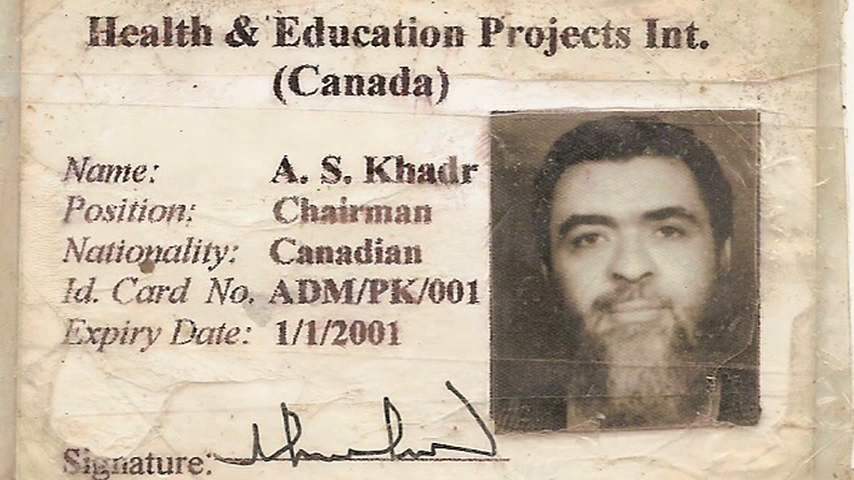

|
Terror's Advocate - Pitch
Produced by: ITVS, Two Tone Productions
Directed by: Whitney Dow
Editor: Hemal Trivedi
Year: 2009
Length: 5:40
A pitch trailer for Terror's Advocate. The film follows
the journey of an alleged terrorist Omar Khadr and his
advocate Lt. Cmdr Kuebler.
The film is still in production and it is being produced by
Peabody Award winning filmmaker Whitney Dow.
|